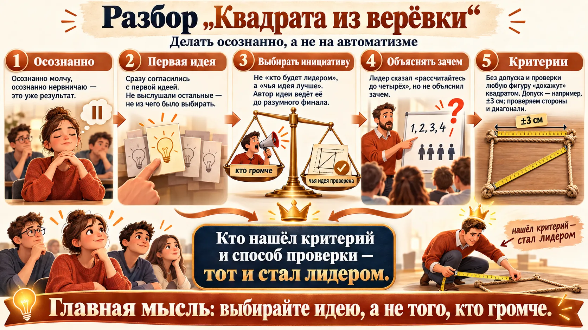
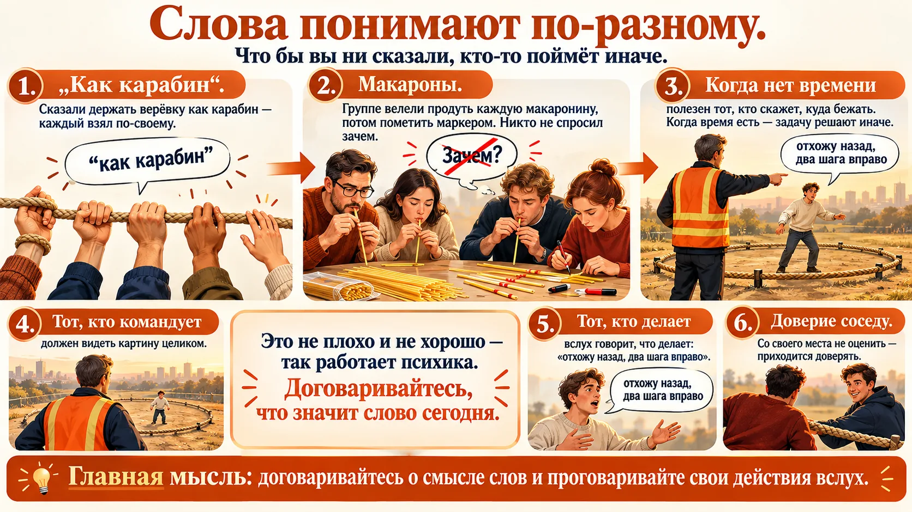
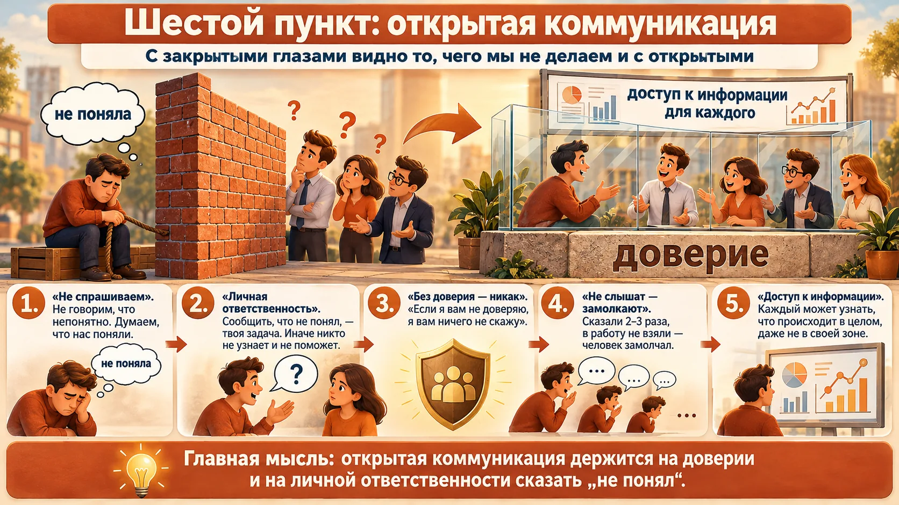
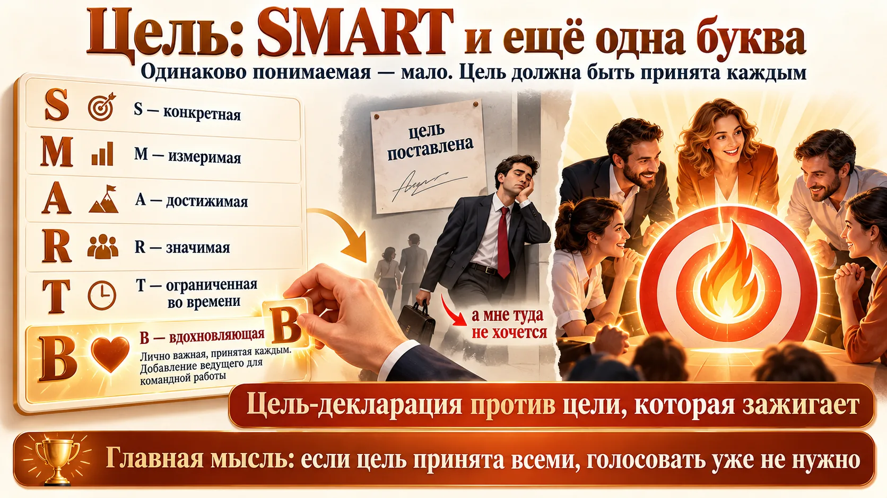
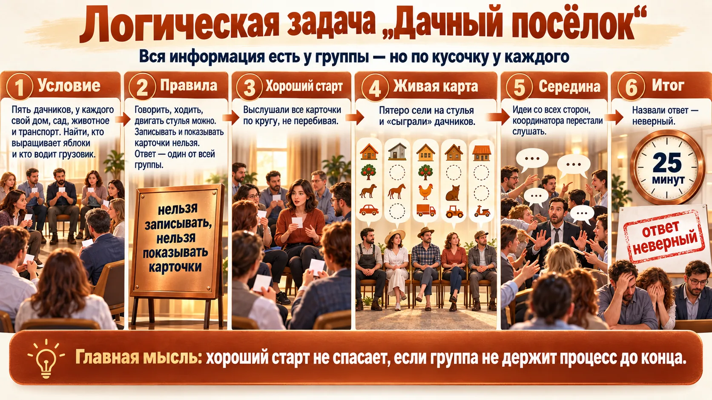
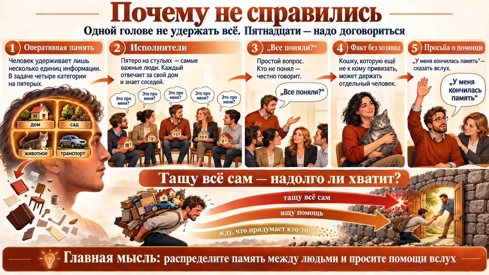
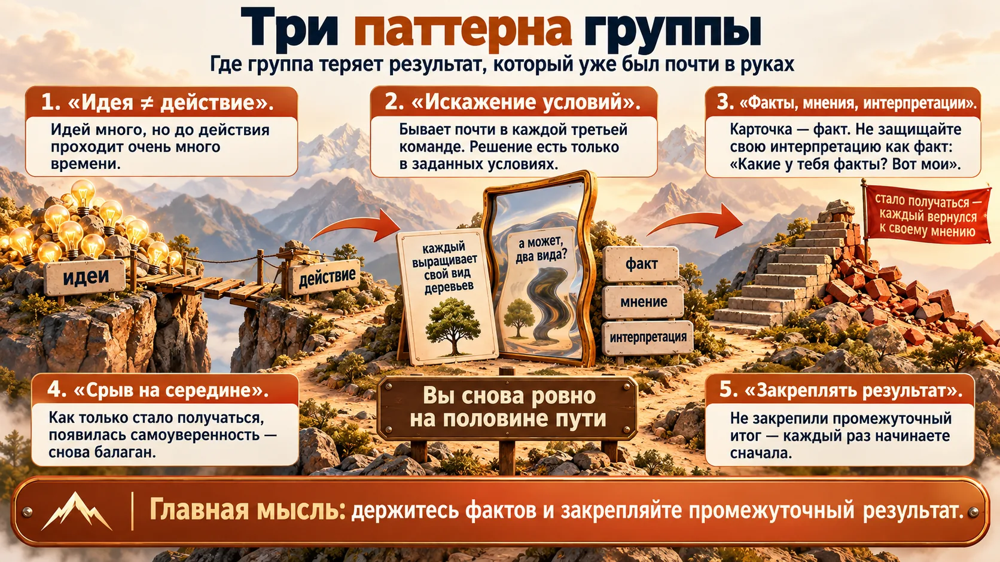
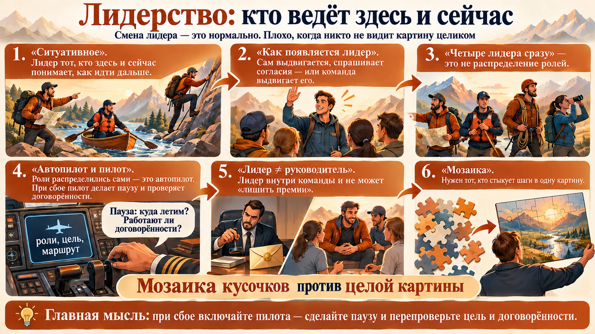
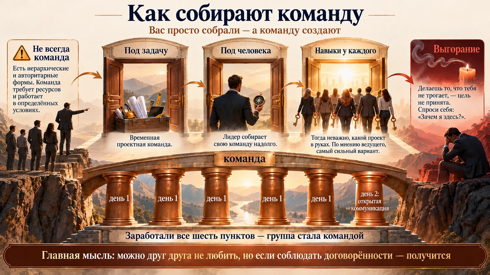
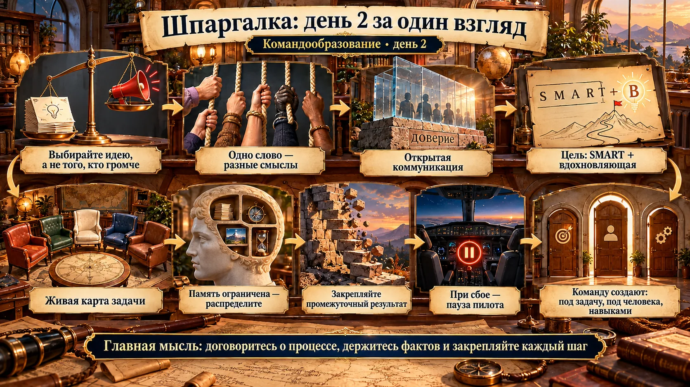

Разбор «Квадрата из верёвки»
День начался с того, чем закончился первый: что случилось с квадратом и что группа поняла за ночь. Как шло упражнение — в уроке 1.

- Сразу согласились с первой предложенной идеей. Не дали высказать и выслушать все идеи, поэтому выбирать было не из чего.
- Не вся группа приняла лидера, предложившего идею. Отсюда сопротивление отдельных людей.
- Лидер начал с правила «рассчитайтесь до четырёх», но не объяснил, зачем.
Выбирать инициативу, а не лидера
Мысль участника, которую ведущие поддержали: «Мы выбираем не лидера, мы выбираем инициативу, которую он предложил». Лидер здесь — прежде всего инициатор. Он предлагает видение, а после коллегиального согласия доводит его «до разумного финала».
Критерии результата
Ведущий: «Если бы вы построили „квадрат“, вы бы начали доказывать мне, что это квадрат, даже если это не квадрат. Такие товарищи докажут, что это треугольник». Значит, нужны объективные критерии: допуск (он назвал ±3 см) и что именно проверяем — длину сторон, диагонали.
Как сменился лидер
Действовать прекратили, когда один участник усомнился, что получается квадрат, и предложили проверять по диагоналям. Ведущий: «Тот, кто нашёл этот критерий и подумал, как это сделать, стал лидером».
Какие роли были нужны в «Квадрате»
Группа назвала базовые роли:
- лидер — тот, кто принимает решение («Эта идея подходит? Согласны?»);
- генератор идей / инициатор;
- критик — подвергает идею сомнению, проверяет на прочность;
- операционный координатор, «голос» — объясняет каждому, что ему делать.
Совещание, где выбирают идею
- Прежде чем обсуждать первое предложение, соберите хотя бы два-три. Выбор из одного варианта — не выбор.
- Голосуйте за план, а не за человека. Автор выбранного плана и ведёт его.
- Если ставите задачу «рассчитайтесь до четырёх», добавьте одну фразу «зачем». Без неё люди сопротивляются или делают по-своему.
Слова понимают по-разному
Вчерашнее «зáмок — замóк» получило продолжение: даже простую инструкцию каждый исполняет по-своему.

«Как карабин» 🪢
Сказали держать верёвку «как карабин» — кто-то намотал её на палец, кто-то просто держал рукой. «Что бы вы ни сказали, кто-то точно поймёт иначе и сделает иначе».
Табличка 📋
Пример ведущей: руководителю дали шаблон таблички, а он перерисовал её «как красивее». Это не плохо и не хорошо — так работает психика. Поэтому договаривайтесь, что значит слово «сегодня».
Макароны 🍝
Однажды группе велели продуть каждую макаронину, потом поставить на каждой отметку маркером. Никто не спросил «зачем?» — все начали делать.
Обратная связь, когда ничего не видно
Участники описали, чего не хватало с закрытыми глазами, — и это работает в любой распределённой команде:
- Тот, кто говорит, что делать, должен представлять в голове, как это происходит.
- Тот, кто делает, вслух сообщает, что делает: «отхожу назад, делаю два шага вправо», — чтобы у командующего было понимание.
- Полезен регулировщик, который видит всё со стороны и чётко говорит всем.
- Доверие соседу. «Ты ему доверяешь, что он прав, потому что со своей позиции ты это оценить не можешь».
Проверка понимания за 30 секунд
- Поставив задачу, попросите пересказать её своими словами. Расхождения — это ваш «карабин».
- В удалённой работе введите правило «проговаривать действие»: короткое сообщение «взял задачу», «сделал половину», «упёрся».
- Если вы «регулировщик» проекта, не делайте руками — смотрите на картину целиком.
Шестой пункт: открытая и прозрачная коммуникация
К признакам команды, которые выработали в первый день, ведущая предложила добавить шестой. Группа подсказала слово: «открытая».

Личная ответственность 🙋
Ведущая — участнице, которая молча держала верёвку: «Никто не знает, что вы что-то не поняли. Ваша личная ответственность — донести это до людей. Тогда вам помогут».
Доверие 🤝
Открытая коммуникация без доверия невозможна: «Если я вам не доверяю, я вам ничего не скажу».
Сказал трижды — замолчал 🔇
Высказанное не брали в работу, люди повторяли по 2–3 раза и замолкали. Плохо, если единственный способ быть услышанным — повысить голос.
Доступ к информации 📂
Любой участник может узнать, что происходит в целом, даже если это не его зона. Документы этого не гарантируют: всё равно каждый поймёт их по-своему.
«Шесть пунктов» — это не готовый список из учебника
Ведущие называют шестым пунктом открытую коммуникацию, а пять предыдущих — то, что группа выработала в первый день (цель, правила, осознанные роли, ответственность и др., урок 1). Полностью список на записи не зачитан, поэтому не выдавайте его за определение.
Доверие — фундамент: пирамида Ленсиони
Патрик Ленсиони в книге «Пять пороков команды» строит пирамиду: в основании — отсутствие доверия, над ним — боязнь конфликтов, недостаток вовлечённости, уклонение от ответственности и на вершине — невнимание к результату. Логика та же, что на занятии: без доверия люди не говорят «не понял» и не спорят открыто, решения принимают формально, а результат теряется.
P. Lencioni, «The Five Dysfunctions of a Team», 2002 (рус. изд. «Пять пороков команды»). Психологическая безопасность Эдмондсон — в уроке 1.
Как сделать коммуникацию прозрачной
- Заведите одну общую доску задач, видимую всем, а не только «своему отделу».
- Если идею произнесли дважды и её никто не подхватил, это сигнал руководителю: остановитесь и разберите её.
- Поблагодарите вслух того, кто сказал «я не понял». Так вы делаете это нормой.
Цель: SMART и ещё одна буква
Вчера цель должна была быть общей, одинаково понимаемой и конкретной. Сегодня ведущий добавил то, чего, по его мнению, не хватает западным моделям.

SMART все знают — и почти никто не применяет
По наблюдению ведущего, когда разбирали поставленные людьми цели, ни одна не прошла по всем критериям SMART. «Удивительно: мы все знаем, а как это работает…»
«В» — вдохновляющая
Для командной работы цель должна быть не только одинаково понимаемой, но и принятой каждым: актуальной, волнующей, лично важной. «Чаще всего мы останавливаемся на декларации: цель поставил — а мне это не интересно». Если цель принята всеми, вопрос голосования снимается.
«В SMART в западных моделях мне не нравится одна штука — там отсутствует то, что для русского человека очень важно»: вдохновение. Буква «В» — его собственное добавление, в классическом SMART её нет.
Команда — не всегда лучший вариант
Ведущий: «Есть масса других подходов — иерархических, авторитарных, силовых. Это всё не про команду, просто про другое. Я не говорю, что команда лучше или хуже». Команда — особая группа, её собрать трудно, она требует много ресурсов и эффективна в определённых условиях. Если пустить формирование на самотёк, уйдёт от месяца до полугода. Ускорить можно, если проявлять инициативу и договариваться осознанно.
Когда команда оправдана: условия Хэкмана
Исследователь команд Ричард Хэкман из Гарварда тоже считал, что команда — не универсальный ответ. Он выделял условия, при которых она работает: настоящая команда (ясно, кто в неё входит, и состав стабилен), убедительное направление, продуманная структура (задача, размер, нормы), поддерживающая среда и компетентный коучинг. «Убедительное направление» Хэкмана близко к «вдохновляющей» цели ведущего.
J. R. Hackman, «Leading Teams: Setting the Stage for Great Performances», 2002.
Проверьте цель на «В»
- Спросите каждого: «Что лично для тебя изменится, когда мы это сделаем?» Если ответа нет, цель пока декларация.
- Прогоните квартальные цели через SMART на совещании — вслух, по буквам.
- Если задача рутинная и времени нет, не тратьте силы на «командообразование»: назначьте ответственного и чёткие шаги.
Логическая задача «Дачный посёлок»
Новая задача — новая проверка вчерашних выводов. Каждый получил карточки с фрагментами информации. Вся информация необходима и достаточна: лишнего и недостающего нет.
Условие
- Пять дачников: поэт, прозаик, журналист, драматург, критик. У каждого свой дом (изба, бунгало, ранчо, коттедж, хата), сад, животное и транспорт. Дома стоят полукругом.
- Задания группы: кто выращивает яблоки и кто водитель грузовика.
Правила
- Можно говорить, ходить, использовать стулья и парты, сколько угодно раз читать свои карточки вслух.
- Нельзя записывать и нельзя показывать карточки другим.
- Ответ — один от всей группы и только целиком. Ведущий не говорит, что верно, а что нет.
- Время — около 25 минут.
✏️ Сначала спланируйте сами. Вас 15, у каждого две карточки, записывать нельзя. Не решайте задачу — опишите процесс: какие шаги, кто что делает, как не потерять уже найденное, как понять, что все поняли. 3–5 пунктов. Потом сравните с тем, как шло у группы, и попробуйте свой план на мини-задаче в тренажёре.
Как шло решение
- Старт. Предложили выбрать координатора. Участник возразил: сначала выслушать идеи всех, чтобы не повторить вчерашнюю ошибку.
- Карточки по кругу. Зачитали все, не перебивая.
- Живая карта. Единогласно приняли идею визуализировать: пятеро сели на стулья («стулья — дома») и «сыграли» дачников.
- Опорные факты. Журналист выращивает персики, поэт живёт в избе, прозаик — в бунгало и разводит голубей, драматург разводит крыс.
- Середина. Снова начался «базар»: идеи со всех сторон, координатора перестали слушать. Один участник лучше других понимал, кому куда сесть, но позицию лидера явно не занял.
- Промежуточный разбор, затем ещё 10–14 минут. Начали путать запад, восток и север, «съехали» со стульев. Назвали ответ — неверный. Задачу группа так и не решила.
- Не хватило структуры: определяли что-то одно, не доводили до конца и перескакивали на другое.
- Не выстроили процесс: надо было сначала договориться, какими шагами решать, а не нырять в содержание.
- Мешал цейтнот: из-за него перебивали друг друга.
- Люди молча соглашались с тем, с чем не были согласны. Значит, прозрачной коммуникации не было.
- Ведущая: «Мы видим ваше поведение, но не знаем, что у вас в голове». Участник задал вопрос, получил ответ — и ответ никак не пошёл в работу. Почему?
Притча о дровосеках. Норвежец и швед соревнуются, кто больше нарубит. Норвежец рубит без остановки, швед каждый час на 10 минут замолкает. Побеждает швед: в паузах он точил топор. Вывод ведущей: паузы иногда важны.
Попробуйте в тренажёре. Задача меньше и придумана для тренажёра (карточки с занятия на записи не разобрать), но механика та же. Лучше всего — с 3–4 коллегами: зачитайте каждому по 2–3 условия, дальше в список не смотрите и не записывайте. Нашли что-то наверняка — жмите «Зафиксировать». Ответ проверяется только целиком, как на занятии.

Почему не справились: память и исполнители
После перерыва ведущие разобрали не «кошки, сливы, помидоры», а формат работы: какой алгоритм и какие действия были нужны.

Оперативная память
Человек удерживает в голове лишь несколько единиц информации. В задаче четыре категории — дом, дерево, животное, транспорт — на пятерых дачников. Одному столько не удержать, а 15 людям ещё надо синхронизироваться. Факт, который пока не к кому привязать (например, «кошку»), можно было отдать отдельному человеку: пусть «держит кошку», пока не станет ясно, чья она.
7 ± 2 — это 1956 год, а «около четырёх» — 2001
Ведущий сказал, что «в 80-х» объём памяти считали 7 ± 2, а «по данным 2015 года» — 4 ± 2. Точнее так: «магическое число 7 ± 2» — статья психолога Джорджа Миллера 1956 года. Оценку около 4 ± 1 единиц предложил Нельсон Коуэн в 2001 году. Суть та же: голова вмещает меньше, чем кажется. Но в тесте называйте Миллера и Коуэна.
G. A. Miller, «The magical number seven, plus or minus two», Psychological Review, 1956; N. Cowan, «The magical number 4 in short-term memory», Behavioral and Brain Sciences, 2001.
Исполнители — самые важные люди
Пятеро на стульях — исполнители, «самые важные люди в команде». Хороший исполнитель не просто сидит, он берёт личную ответственность за свой стул, дом, сад. Слушая любую информацию, примеряет: «Это про меня? Я восточнее или западнее?» И знает соседей: «Если я не знаю, кто слева, какое у меня доверие?»
«Все поняли?»
Простейший механизм прозрачной коммуникации — спрашивать: «Все поняли?» Тот, кто не понял, честно отвечает. Хуже всего, когда человек кивает, а при действии выясняется, что он не понял.
«У меня кончилась оперативная память»
Участник, который держал в голове всю карту, признался: в какой-то момент память кончилась. Он ждал, что каждый возьмёт ответственность за свой стул, но сам этого не проговорил — предполагал, что другие поведут себя так же, как он. «У меня всё, память кончилась» — это просьба о помощи, и её надо произносить вслух. Когда человек упирается в затык, обычно у него три варианта:
- тянуть всё самому;
- искать ресурс и помощь;
- ждать, что кто-то другой придумает.
Вопрос ведущей: «Вы выбрали „я сам“. И надолго вас хватило?»
Попробуйте в тренажёре. (1) «Каждый держит всё»: 20 фактов на голову и 105 каналов связи — так было на занятии. (2) «Один координатор» — перегружен он один: отсюда «кончилась память». (3) «Свои дачи» и «+ хранитель»: при ёмкости 4 только с хранителем непривязанных фактов никто не перегружен.
Распределите память команды
- В сложном проекте у каждого участка — свой «держатель»: он отвечает за всё, что касается его участка, и знает соседей по процессу.
- Назначьте «хранителя хвостов»: кто держит вопросы, которые пока ни к кому не относятся.
- Если чувствуете перегруз, скажите это вслух — это не слабость, а информация для команды.
Три паттерна группы
Ведущий назвал три повторяющихся сценария, на которых группа теряет почти готовый результат. По его словам, ситуация та же, что вчера: «Вы ровно на половине пути».

Факты, мнения, интерпретации
Искажение условий, по опыту ведущего, бывает «практически в каждой третьей команде». Карточки — это факты. Мы привыкли сразу их интерпретировать, а потом защищать свою интерпретацию как факт. Лучше вопрос на проверку: «Какие у тебя факты? Вот мои».
Не закрепляют промежуточный результат
Группа не фиксирует то, чего уже достигла, поэтому каждый раз начинает сначала. Это повторилось три раза: вчера и дважды сегодня. Совет группы самой себе: дослушивать до конца.
«Лестница умозаключений» Аргириса
Как факт превращается в «мою правду», описал профессор Гарварда Крис Аргирис. Мы поднимаемся по ступеням: наблюдаемые данные → отобранные данные → смысл, который мы им придаём → допущения → выводы → убеждения → действия. Подъём занимает доли секунды и не замечается. Средство — спускаться вниз вслух: «На каких данных ты это строишь?» Это и есть вопрос ведущего «Какие у тебя факты?».
C. Argyris, «Overcoming Organizational Defenses», 1990; популяризация — P. Senge и др., «The Fifth Discipline Fieldbook», 1994.
«Мне кажется» ≠ «на карточке написано»
Факт проверяем: он написан, измерен, наблюдаем. Мнение и интерпретация — то, что вы из него вывели. В спорной ситуации первым делом разделите их, иначе группа будет решать другую задачу, у которой нет решения.
Защита от трёх паттернов
- Идея → действие: у каждой принятой идеи есть первый шаг, ответственный и срок, записанные прямо на встрече.
- Искажение условий: перед обсуждением зачитайте исходные условия (ТЗ, договор, данные) дословно.
- Срыв на середине: в конце каждого этапа скажите вслух «что мы уже знаем точно» и зафиксируйте. Когда начинает получаться, держитесь договорённостей ещё строже.
Лидерство: кто ведёт здесь и сейчас
Координатор, выбранный голосованием, по ходу «самоликвидировался», а группа этого не заметила и продолжила работать. Сам он объяснил: «Я понял, что не вывожу, лучше сяду на стул и буду помнить, что я критик». Это и есть открытая коммуникация.

Как появляется лидер
- Сам выдвигается: «Я знаю, что делать, доверьтесь мне». Если за ним пошли, «контракт» заключён, пусть и полуосознанно.
- Спрашивает согласия: «Вы согласны, что я поведу?»
- Команда выдвигает: «Мы видим, что у тебя получается». Человек может отказаться: «Я не готов».
Во второй день всё снова произошло само: начал один, потом второй, третий, и никто никого не спросил. Четыре лидера одновременно — это не распределение ролей.
Автопилот и пилот
Чаще всего команда летит на автопилоте: роли распределились сами, есть цель и маршрут. Но пилот (сознание) нужен, чтобы при любом сбое сделать паузу и спросить: «Куда летим? Работают ли наши договорённости?» Дальше — перепрограммировать автопилот или сменить пилота.
Пример: раз балаган начался трижды, можно ввести новую роль — «контролёр балагана», человек вне круга, который останавливает группу. Договариваться можно о чём угодно, вводить новые правила, не отменяя старых. Главное — осознанно.
Лидер ≠ руководитель
У них разные ресурсы, способности и инструменты влияния. Лидер находится внутри команды. Он не может сказать «лишу премии», у него другие источники влияния.
Мозаика вместо картины
Ситуативное лидерство само по себе — «это нормально, это классно». Проблема в другом: получилась мозаика. Прошли кусочек, остановились, следующий кусочек с предыдущим не связан. Нужен тот, кто видит картину целиком и стыкует шаги.
«Ситуативное лидерство» на занятии и в учебнике — разные вещи
На занятии так назвали смену лидера по ходу задачи: ведёт тот, кто знает этот участок пути. В учебниках менеджмента «ситуационное лидерство» — модель Пола Херси и Кена Бланшара (1969): один и тот же руководитель меняет стиль — указывает, продаёт идею, участвует или делегирует — в зависимости от готовности подчинённых. Если в тесте спрашивают о Херси и Бланшаре, речь о стиле руководителя, а не о смене лидера.
P. Hersey, K. Blanchard, «Life cycle theory of leadership», Training and Development Journal, 1969.
«Чуть жёстче и чуть меньше демократии»: назначить пятерых дачников, усадить их полукругом и по цепочке привязывать каждый факт к конкретному человеку — «Изба — к тебе. Запомнил? Дальше». Это «жёсткий процесс координации информации». И ещё: «Чтобы стать лидером, надо несколько раз ошибиться». Двух дней для этого мало: ещё нет доверия, непонятны границы. «Каждый из вас уже где-то проявил себя как лидер, даже тот, кто спокойно сидел».
Группа, которая разрешает быть собой
Одна участница рассказала: в институте она полгода молчала в группе английского — не могла произнести ни слова. Потом ей сказали: «Расслабься, говори, мы все такие были». Группа «позволила подрасти» до своего уровня. В группе, которой не доверяешь, человек молчит. Результата можно добиться и так, но командой это не будет. Другая участница — о муже, которому надо повторить четыре раза: «Мне не жалко повторить. Когда мы знаем и принимаем друг друга, мы легко относимся к таким вещам».
Включите «пилота»
- Договоритесь о стоп-слове: любой участник может остановить встречу вопросом «куда летим?».
- Если сбой повторяется, вводите роль под него — хронометрист, «контролёр балагана», секретарь решений.
- В проекте со сменой лидеров по этапам назначьте одного «держателя картины», который стыкует этапы.
Как собирают команду
Ведущий: «Вас просто собрали, и в этом большая проблема». Команду не собирают — её создают.

Пример третьего способа
Ведущий привёл организации без постоянных отделов и руководителей, где «весь персонал всё время перемешивается»: люди сами собираются под пришедшую задачу. Другой пример — туристы, которые впервые встретились и сами организовали поход.
Холакратия и «бирюзовые» организации
Термин на записи распознан с ошибкой. По описанию речь о холакратии — системе самоуправления, которую придумал Брайан Робертсон (2007): вместо должностей — роли, вместо начальников — круги, которые сами распределяют работу. Похожую модель Фредерик Лалу назвал «бирюзовыми» организациями. Цена такой системы — высокие требования к навыкам командной работы у каждого. Это и есть третий способ ведущего.
B. J. Robertson, «Holacracy: The New Management System for a Rapidly Changing World», 2015; F. Laloux, «Reinventing Organizations», 2014.
«Командная работа защищает от выгорания. Выгорание означает, что ты делаешь что-то, что тебя не трогает, — цель не принята. Тогда стоит спросить себя: „Зачем я здесь?“» Участница возразила, что у выгорания есть и другие причины. Ведущий согласился: «Причин там целый список», он говорил только о командной работе.
Шесть источников выгорания по Маслач
Кристина Маслач, автор главного опросника выгорания (MBI), выделяет шесть рассогласований человека с работой: перегрузка, недостаток контроля, недостаточное вознаграждение, разрушение сообщества, несправедливость и конфликт ценностей. Мысль ведущего о непринятой цели ближе всего к конфликту ценностей, а команда помогает против «разрушения сообщества». Так что участница права: причин действительно несколько.
C. Maslach, M. P. Leiter, «The Truth About Burnout», 1997; C. Maslach, M. P. Leiter, «Understanding the burnout experience», World Psychiatry, 2016 — статья.
Что дальше
Будут ли ещё такие занятия, ведущий не знает: этот вопрос к организаторам программы. Сам он готов работать с группой и дальше. Задача «Дачный посёлок» осталась нерешённой. По опыту ведущего (он проводил игру около 500 раз), примерно 10% групп решают её быстрее чем за 15 минут, около половины — за 25.
Восемь коротких выводов на свою работу
- Прежде чем действовать, договоритесь о процессе: шаги, роли, кто ведёт.
- Выслушайте все идеи и выбирайте инициативу, а не того, кто громче.
- Заранее определите критерии результата.
- Работайте с фактами, не подменяйте условия интерпретациями.
- Закрепляйте промежуточный результат.
- Спрашивайте «все поняли?», честно говорите «не понял», вслух просите о помощи.
- Берите личную ответственность за свой участок и знайте соседей.
- При сбое включайте пилота: пауза и проверка цели и договорённостей.
Что выучить к аттестации
Формат аттестации пока не объявлен. Отмечайте пункт, когда можете объяснить его своими словами без подсказки. Отметки сохраняются в браузере.
Второй день тренинга усвоен.
Проверьте себя
Пятнадцать вопросов. После ответа — правильный вариант и короткий разбор.
1. Что, по выводу участников, нужно выбирать в первую очередь?
2. Кто, по словам ведущего, стал новым лидером в «Квадрате»?
3. Что иллюстрирует история с макаронами?
4. Какой «шестой пункт» добавили к признакам команды?
5. Без чего, по словам ведущих, невозможна открытая коммуникация?
6. Какую букву ведущий добавил к SMART для командной работы?
7. Что означает буква A в SMART?
8. Кто и когда предложил «магическое число 7 ± 2»?
9. Как распределить информацию в задаче вроде «Дачного посёлка»?
10. Какие три варианта поведения в затыке назвала ведущая?
11. Какой из паттернов ведущий назвал «искажением условий»?
12. Почему группа снова оказалась «на половине пути»?
13. Что значит метафора «автопилот и пилот»?
14. Чем «ситуационное лидерство» Херси и Бланшара отличается от «ситуативного» с занятия?
15. Какой способ собрать команду ведущий считает самым сильным?
Отвечено: 0 / 15
Шпаргалка: главное из занятия

- Выбирайте идею, а не того, кто громче, и заранее договаривайтесь о критериях результата.
- Слова понимают по-разному. Договаривайтесь о смысле и проговаривайте действия вслух.
- Шестой пункт — открытая коммуникация. Она держится на доверии и на личной ответственности сказать «не понял».
- Цель — SMART и «вдохновляющая»: принятая каждым, а не задекларированная.
- Память ограничена. Распределите факты по исполнителям, просите помощи вслух.
- Три паттерна: идея без действия, искажение условий, срыв на середине. Закрепляйте промежуточный результат.
- При сбое включайте пилота: пауза, проверка цели и договорённостей. Команду не собирают — создают.